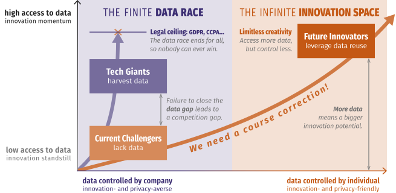
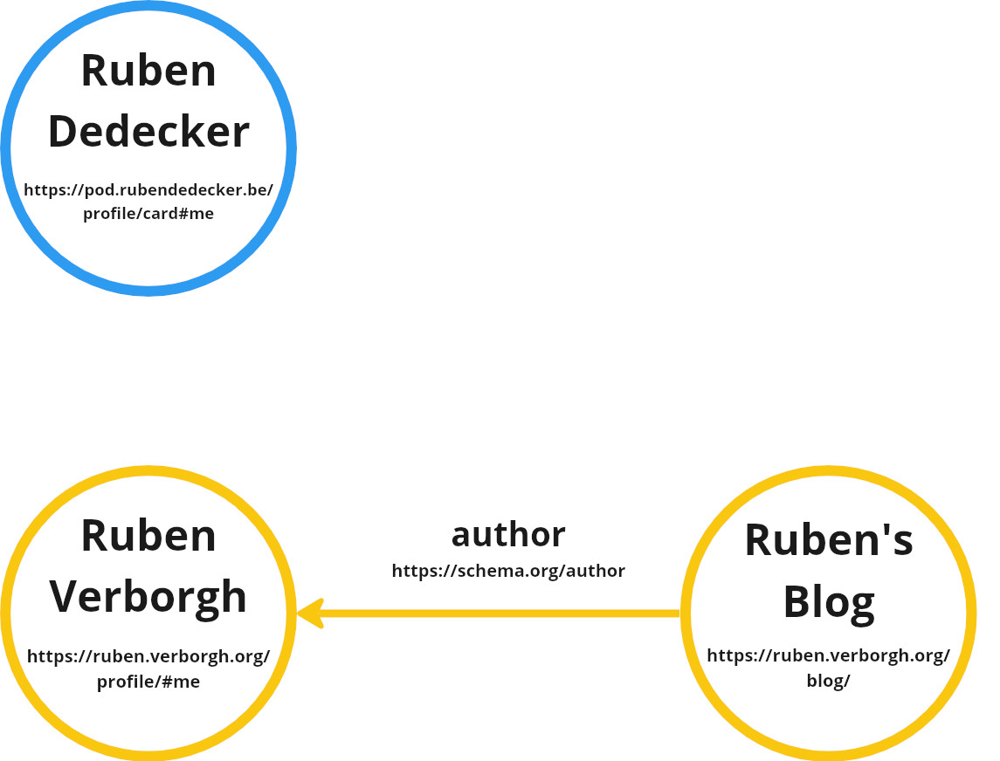
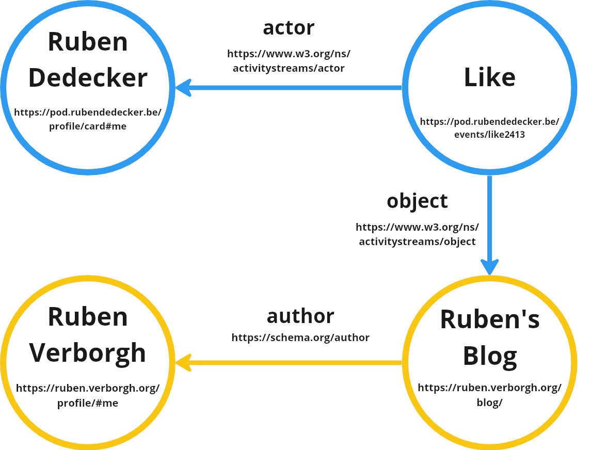
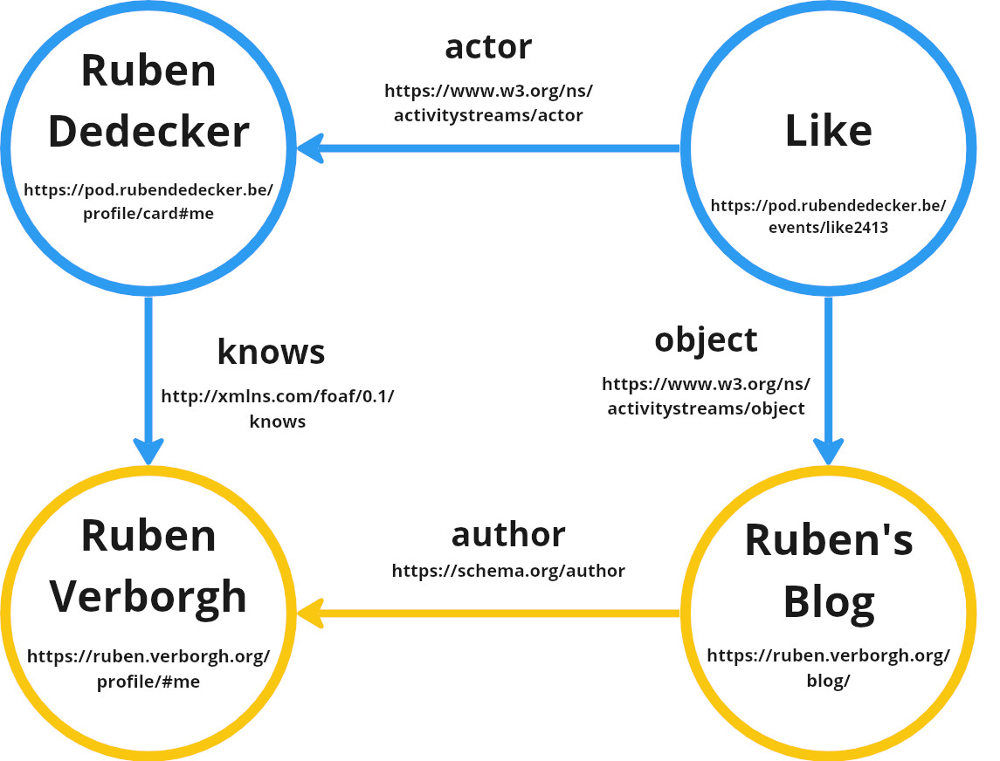
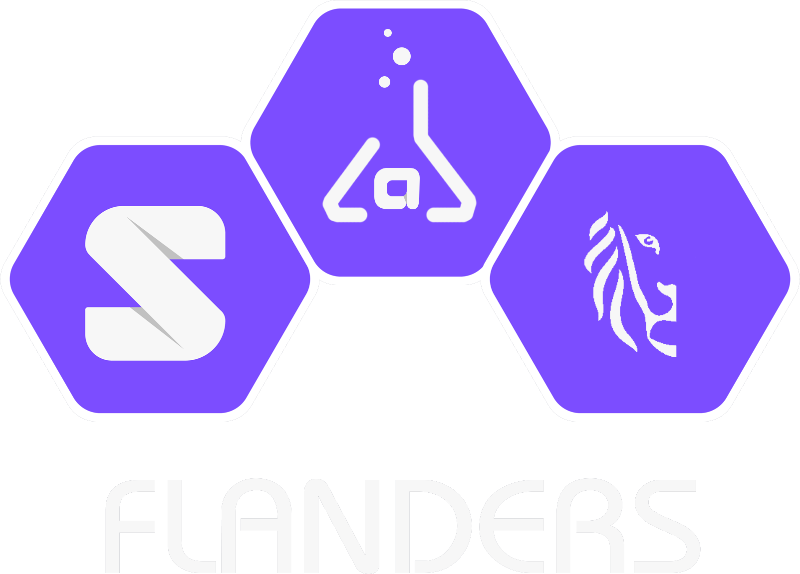

Before the Web
-
Exchanging information was hard
- different hardware
- different software
-
Innovation was hard
- For which machines do we build?
- For which operating systems do we build?
The Web strives to be universal
through
independence of many factors.
-
Anyone can use the Web, regardless of:
- hardware
- desktop
- phone
- tablet
- watch
- …
- software
- operating system
- browser
- app
- …
-
Developers are free to innovate.
- Build for the Web.
- Standards provide interoperability.
Individual links are allowed to break
so the entire Web does not
Tim Berners-Lee
The Web brings permissionless innovation
at a global scale
-
Anyone can build anything for any reason
-
The technologies are open
-
You don’t need anyone’s permission
to join the Web and launch a new idea
The Web brings freedom of expression
to everyone across the world
-
Anyone can say anything about anything
-
We can link to opinions of others
to discuss about them
-
The “Web 2.0” ideas transition users
from consumers to prosumers
The Web enabled unprecedented creativity
The browser wars

register an account
best viewed with
Our data has become stuck
-
Former former personal blogs
are now on Facebook and Twitter
- great user experience
- but we lost control
- and the Web lost its data
-
Data became stuck in silos
- not centered around the users that create it
- but centered on the platforms that use it
Within the walled gardens on the Web,
you have to move either data or people
 © David Simonds
© David Simonds
Ironically, permissionless innovation
even allows platforms that prevent it.
The Facebook founder has no intention of
allowing anyone to build anything on his platform
that does not have his express approval.
Having profited mightily from the Web’s openness,
he has kicked away the ladder that elevated him
to his current eminence.
John Naughton, The Guardian
© Vinayak Shankar Rao
The consequences of data centralization
© NURPHOTO
The Solid project
-
Spearheaded by Tim Berners-Lee
as a way to take back control
-
Solid provides a way of building Web apps
that let people keep control of their data
-
Solid builds on existing W3C standards
-
It is not a new Web:
-
it builds on top of the existing Web.
Separating applications and data
-
Typical platforms nowadays store data
inseparably from an application.
-
If we need to access the data, we cannot choose our app.
-
If we need to use the app, we can’t choose our data source.
-
By separating data from apps,
we create independent choices.
-
We can give data the portability
that the Web enables for our documents
User perspective:
we can control and share our data
Appliation perspective:
Innovation on a Web scale

Where does this data go?
-
To separate applications and data ...
-
the user must have a space on the Web
Interoperability between Solid Pods
is enabled through standardization
-
Solid builds on existing Web standards.
-
The standards cover:
- data pods
- applications or services
- identity
-
Standards enable the interactions
between data, apps, and identities.
Your data pod can contain
any data you create online
- profile üë§
- media üñº
- comments üó£
- likes üëç
- … ✨
You control which applications
can interact with your pod
-
You can give read and/or write permissions
for specific pieces of data to:
- applications
- other people
- automated agents
-
Applications deliver an integrated experience
-
They can integrate your data,
with other sources from all over the Web
Any app you can envision,
you can build with Solid
- calendar üìÖ
- social feed üë•
- photo sharing üì∏
- conference organization system üé§
- … ✨
Applications can integrate data
from many sources

A point about trust
-
Trust requires provenance of data
-
Apps can keep track of the source of data
-
Apps can allow you to ignore untrusted data
-
Verification enables trust in data
-
There is value in providing data verification
-
Signatures provide trust in provenance
Our data needs to scale to the Web!

I want to like a blog!
On Facebook?
On Twitter?
On Tumblr?
On the Web!
If I like your blog, I need a way
to connect my like to your blog.
{
"@context": "https://www.w3.org/ns/activitystreams",
"id": "#ruben-likes-blog",
"type": "Like",
"actor": "https://rubendedecker.be/profile/#me",
"object": "https://ruben.verborgh.org/blog/",
"published": "2019-04-25T08:00:00Z"
}
My like needs a univeral meaning
so different apps can reuse it
{
"@context": "https://www.w3.org/ns/activitystreams",
"id": "#ruben-likes-blog",
"type": "Like",
"actor": "https://rubendedecker.be/profile/#me",
"object": "https://ruben.verborgh.org/blog/",
"published": "2019-04-25T08:00:00Z"
}
Data from different sources
can be easily be combined.
{ "@context": "https://www.w3.org/ns/activitystreams",
"@graph": [{
"type": "Like",
"actor": "https://rubendedecker.be/profile/#me",
"object": "https://ruben.verborgh.org/blog/",
"published": "2023-01-22T08:00:00Z"
},{
"type": "Like",
"actor": "https://example.org/people/patrick#me",
"object": "https://ruben.verborgh.org/blog/",
"published": "2023-02-21T09:05:00Z"
}]
}
My data forms a graph on the Web

Interactions create new connections

An ever expanding graph of data

Take advantage
of the Web!

Host your documents from your Pod
Empower your data on a Web scale
How does your data empower you?


 Except where otherwise noted, the content of these slides is licensed under a Creative Commons Attribution 4.0 International License.
Except where otherwise noted, the content of these slides is licensed under a Creative Commons Attribution 4.0 International License.
![[A list of Google products.]](images/google-products.png)
![[couple shopping at a supermarket]](images/supermarket.jpg)
![[The POD as the source of your data]](images/store-anything-tour.svg)